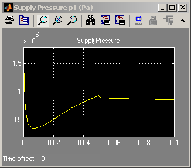
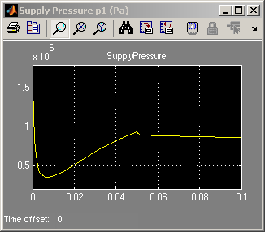
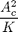
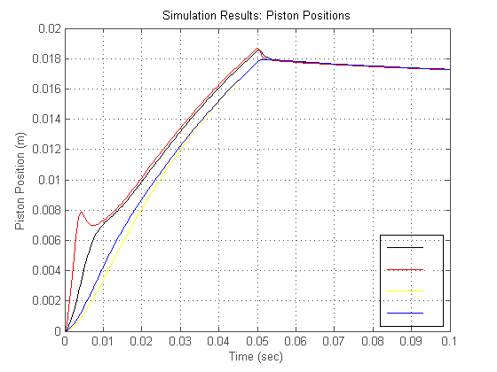
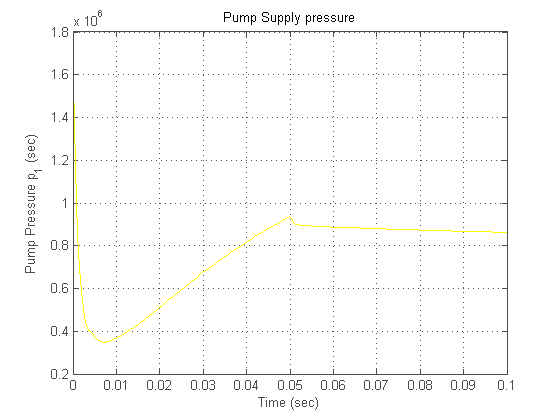

Four Hydraulic Cylinder Simulation
This demo uses Simulink® to create a model with four hydraulic cylinders. See two related demos that use the same basic components: single cylinder model and model with two cylinders and load constraints.
- Note: This is a basic hydraulics demo. You can more easily build hydraulic and automotive models using SimDriveline™ and SimHydraulics®.
- SimHydraulics extends Simulink with tools for modeling and simulating hydraulic power and control systems. It enables you to describe multi-domain systems containing connected hydraulic and mechanical components as physical networks.
- SimDriveline extends Simulink with tools for modeling and simulating the mechanics of driveline (drivetrain) systems. These tools include components such as gears, rotating shafts, and clutches; standard transmission templates; engine and tire models.
Contents
Modeling
Figure 1 shows the top level diagram of the model. This model has a single pump and four actuators. The same pump pressure (p1) drives each cylinder assembly and the sum of their flows loads the pump. Although each of the four control valves could be controlled independently, as in an active suspension system, in this case all four receive the same commands, a linear ramp in orifice area from zero to 0.002 sq.m..
Opening the Model and Running the Simulation
To open this model, type sldemo_hydcyl4 at MATLAB® terminal (click on the hyperlink if you are using MATLAB Help). Press the "Play" button on the model toolbar to run the simulation.
- Note: The model logs relevant data to MATLAB workspace in a structure called sldemo_hydcyl4_output. Logged signals have a blue indicator (see the model). Read more about Signal Logging in Simulink Help.
 
 Figure 1: Four cylinder model and simulation results
Model Description
The pump flow begins at 0.005 m3/sec (just like in the single cylinder model), then it drops to 0.0025 m3/sec at t=0.05 sec. The parameters C1, C2, Cd, rho, and V30 are identical to those in the single cylinder model. However, by assuming individual values for K, A, and beta, each one of the four cylinders exhibit distinctive transient responses. The table below gives the characteristics of the four actuators.
---------------------------------------------------------------- Parameter | Actuator1 Actuator2 Actuator3 Actuator4 ----------------|----------------------------------------------- Spring Constant | K K/4 4K K Piston Area | Ac Ac/4 4Ac Ac Bulk Modulus | Beta Beta Beta Beta/1000 ---------------------------------------------------------------- Beta = 7e8 Pa [fluid bulk modulus] K = 5e4 N/m [spring constant] Ac = 1e-3 m^2 [cylinder cross-sectional area]
The ratio of area and spring constant is the same for all pistons, so they should have the same steady state output. The dominant time constant for each actuator subsystem is proportional to

(result obtained from dimensional analysis), so we can expect the piston assembly 2 to be somewhat faster than assembly 1. The piston assembly 3 is expected to be slower than 1 or 2. The piston assembly 4 has a significantly lower bulk modulus beta (as would be the case with air), thus we expect piston 4 to respond more sluggishly than piston 1.
Results
Figure 2: Piston positions in four cylinder example
Figure 3: Pump Supply Pressure, p1
The initial jolt of flow at t=0 is seen by the four actuators as a pressure impulse. The pump pressure (p1), which is initially high, drops rapidly because there is a high flow demand from the four loads. During the initial transient (about 4 msec), distinct responses identify the individual dynamic characteristics of each assembly unit.
As predicted by the parameter values, actuator 2 responds much faster than actuator 1. The third and fourth pistons are much slower because they require more working fluid to move the same distance. In case 3, the piston displaces more volume due to its larger cross-sectional area. In case 4, although the displaced volume is the same as in case 1, the device requires more fluid because it is subsequently compressed.
As the pump pressure falls to the level within the cylinders, the distinctions in behavior are blurred. The individual responses blend into an overall system response which maintains the flow balance between the components. At t=0.05 sec, the pump flow drops to a level that is close to the equilibrium and the actuator flows are nearly zero. The individual steady state piston positions are equal, as predicted by the design.
Closing the Model
Close the model. Clear generated data.